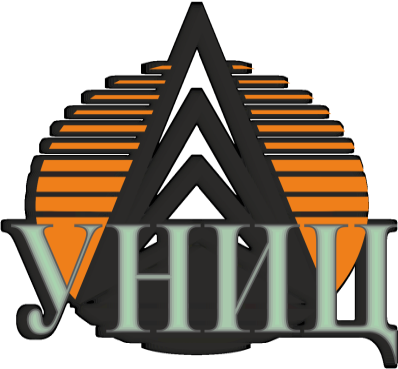

Инновации и устойчивое развитие в энергетике
Мы - одна из ведущих энергетических компаний, занимающаяся разведкой, добычей, переработкой и реализацией нефти и газа.
Лет опыта
Стран присутствия
Сотрудников
Эффективная добыча нефти и газа с применением современных технологий
Современные НПЗ и технологии переработки углеводородов
Оптимизированная система транспортировки и хранения
Разработаны и апробированы способ и устройства для глубокой щадящей перфорации скважин. Технология позволяет одним спуском специальной компоновки направленно вырезать несколько окон в эксплуатационной колонне, а вторым спуском провести перфорационные каналы через полученные окна.
Разработаны и запатентованы способы бурения дополнительных стволов из действующих скважин, а также новых двухствольных скважин с креплением дополнительных стволов и также с возможностью одновременно раздельной эксплуатации и избирательной работы с отдельными стволами.
Один из вариантов предполагает крепление дополнительного ствола хвостовиком, подвешенным на шестилучевых профильных трубах, которые раскрываются в момент получения «стоп» при цементаже. В голове хвостовика устанавливается ориентационная втулка, позволяющая обеспечивать избирательную работу с отдельными стволами с использованием эксплуатационного клина. Эксплуатацию можно вести как двумя лифтами одновременно-раздельно, так и совместную.
Имеются и другие разработки, однако возникают проблемы с их апробацией и внедрением. Было бы интересным иметь учебно-производственный полигон, на котором будут отрабатываться новые технические и технологические решения, а затем предлагаться к серийной реализации.
Инвестиционная привлекательность: При наличии такого полигона возможно не только отработка новых решений, но даже при разработке трудноизвлекаемых запасов рентабельно работать за счёт получения льгот по НДПИ.
Хотя каждая скважина индивидуальна, но близкие решения могут быть успешно тиражированы на другие объекты, что повышает рентабельность инвестиций.
Разработаны и апробированы способ и устройства для глубокой щадящей перфорации скважин. Технология позволяет одним спуском специальной компоновки направленно вырезать несколько окон в эксплуатационной колонне, а вторым спуском провести перфорационные каналы через полученные окна.
Преимущества: Прокладка каналов проводится по радиусам от 7 до 15 метров, протяжённость каналов до нескольких десятков метров.
Предлагается технология бурения и крепления дополнительного ствола без потери проходимости в основной ствол и возможностью одновременно-раздельной эксплуатации.
Особенности: Технология предусматривает зарезку дополнительного ствола в соответствии с требованиями выбора интервала зарезки со съёмного клина, бурение дополнительного ствола, извлечение съёмного клина по окончании бурения, спуск специально подготовленного хвостовика с полым клином, прикреплённым к башмаку, крепление и отсоединение хвостовика.
Разработана и апробирована технология строительства многоствольных скважин, обеспечивающих возможность одновременно-раздельной эксплуатации, в том числе двухлифтовой.
Экологические преимущества: Технология предупреждает интерференцию между стволами и возможность избирательной работы в процессе эксплуатации, что снижает экологическую нагрузку.
Разработана технология строительства многозабойных скважин, обеспечивающая предупреждение загрязнения ранее пробуренных стволов при бурении последующих и возможность избирательной работы с отдельными стволами в процессе эксплуатации.
Технология: Способ предусматривает по окончании бурения основного ствола последовательную ориентированную установку снизу вверх калиброванных полых клиньев с помощью профильных эспандируемых труб и бурения с них дополнительных стволов.
Разработано и апробировано несколько вариантов строительства многоствольных скважин с возможностью эксплуатации двумя лифтами, предупреждением интерференции между стволами и даже расположением стволов в разных пластах.
Применение: Способ заключается в зарезке дополнительного ствола из закреплённого ствола с заранее подготовленного интервала, бурении при необходимости, креплении дополнительного ствола. Способ позволяет также избирательно работать с отдельными стволами. Построены многоствольные скважины в нескольких вариациях.
Компания запускает новый перспективный проект...
Внедрение новых стандартов экологической безопасности...